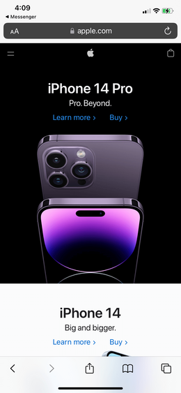

Visual Balance
Biamar Clothing
https://biamar.com.br/a_marca
This Biamar Clothing website, exemplifies the design principle "Visual Balance" because of certain aspects that the website shows. An example of which would be how the name brand "Biamar" is in white along with the paragraph beneath the title and the menu button on the top-left of the page is in contrast with the person behind the text. It is structured in the way that the person's face is on the center of the page. While, the name brand title and the paragraph along with the menu button is on the left-hand side of the website, making it more populated on the left-side of the page. This follows the rule asymmetry in visual balance which promotes the idea of looking more on one side of the page but still have the other side of the page to interesting and visually pleasing to look at.
Rule of Thirds
Nike
https://www.nike.com/
The Nike website exemplifies the design principle "Rule of Thirds" through how the content on page is laid out. The images are both placed on the upper left and the right-hand side of the page. While the Logo along with the texts are placed on the bottom-left and upper-right of the page.
Contrast
Apple.inc
https://www.apple.com/
This Apple website exemplifies the design principle "Contrast" by how the black part of the website contains white colored texts and the apple products being in a dark purple-ish color. Below the black iPhone 14 Pro product is the white counterpart of the iPhone 14 Pro. Which shows the complete opposite of the black counterpart. It has a white background, and a black text colors which promotes contrast.